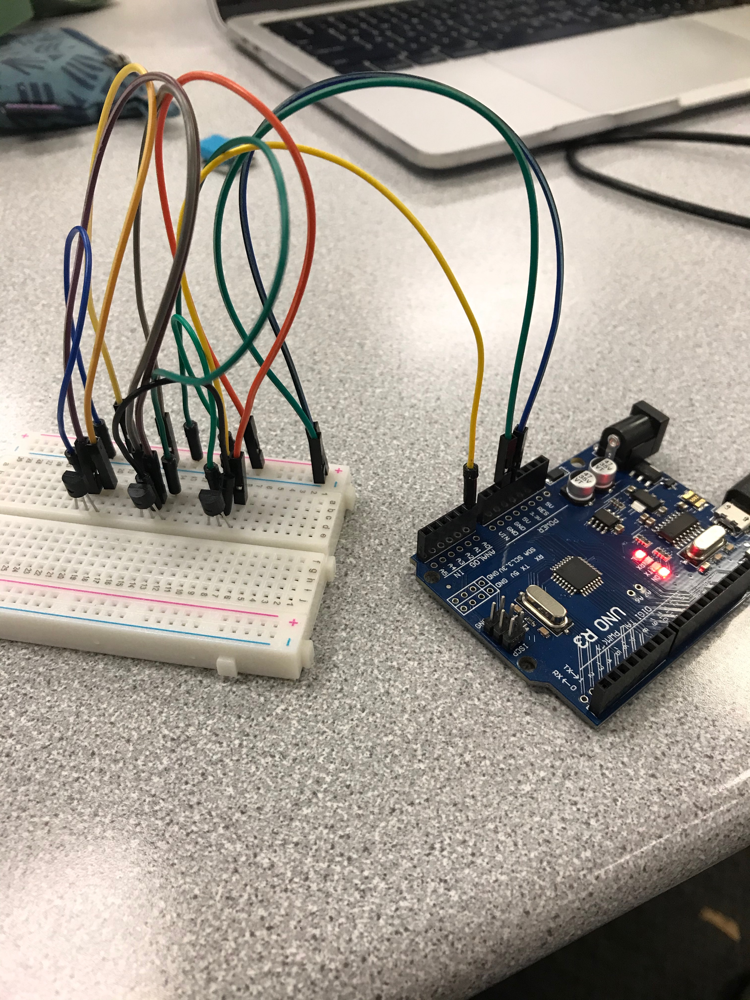
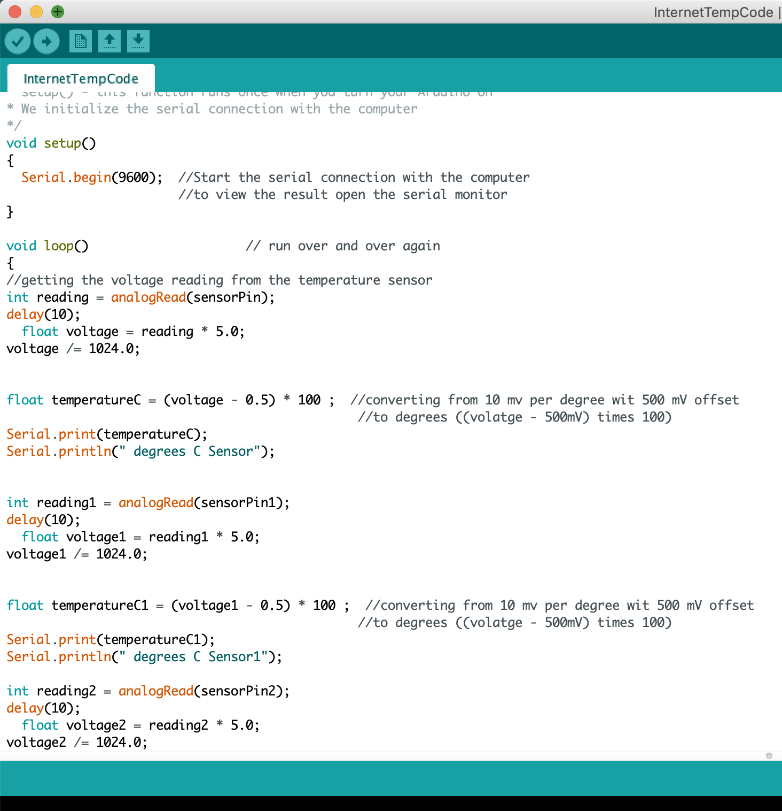
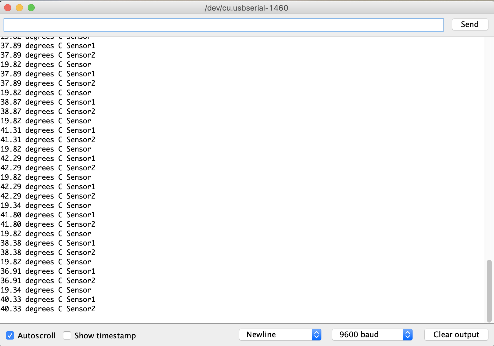

Three Sensors
My idea for this project was to connect three temperature sensors and have them all give readings for different places. I used my Arduino, a half breadboard, and some TMP36 sensors.

Programming
I almost immediately ran into a problem because there weren't any resources on how to hook TMP36s up to the Arduinos, much less on how to hook 3 TMPs up. I found a different sensor that was kind of similar—a DS18B20—and ran the wires to be kind of similar. I found some code for how to program a TMP to run with an Arduino, so I took that and rewrote it to work with 3 sensors on the same board.

The Results
I was not quite successful. The sensors were literally inches from each other and didn't come out with the same results. I also could tell that the second two sensors had some problems since it wasn't 41ºC, or 105ºF, in the Clyde Building. But all the sensors gave some sort of output, which I was happy with.

Notes:
- If asked, I'd probably say that this is the project that I'm most proud of. I made my own wiring pathways, wrote my own code, and was semi-successful. I took a bunch of different things that I learned this semester and applied them to this project, which I thought was pretty cool. It's fun to have your stuff work.